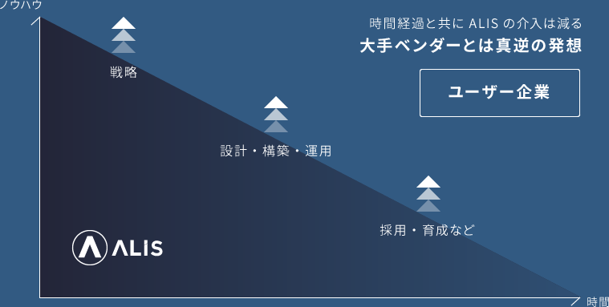
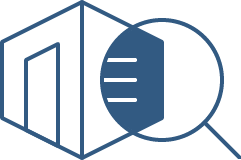
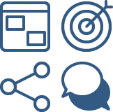
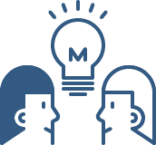

DX partnershipsALISのデジタル
トランスフォーメーション事業
顧客の体験をアップデート
できなければDXではない
テクノロジー・データの活用を武器に、顧客に価値提供する組織作りに真正面から向き合う
ALIS DX Solutionの特徴
我々のゴールは「お客様のデジタル企業化」であり、そのために我々が持つノウハウ全てをお客様に装着することを重視しています。誰も触れず競争力の無い独自システムを納品して囲い込むことや、戦略だけ作って手を動かさないことを良しとせず、お客様視点で必要なサポートを一気通貫で行います。

Main Solutions
DX Strategy planningデジタル状態の可視化+戦略コンサルティング
DX推進指標をベースとした指標を用いて社内システムのデジタル活用度及び技術的負債を可視化・定量化します。その上で、DXのビジネスチャンス・コスト削減計画・得られる顧客体験を精緻に評価し、全関係者が納得できる状態の戦略を策定します。場合によっては、このタイミングで統合データカタログを整備し全データを可視化したり、DX推進ビジョンを言語化することもあります。
DX execution / development supportDXの実行･開発支援
ブロックチェーンやサーバーレス等の先端技術を活用した顧客体験向上のための新規事業・アプリケーション開発はもちろん、コスト削減・デジタル競争力強化のためのクラウド移行やゼロトラストセキュリティの設計、デジタル人材の育成や採用など、企業様の希望を一気通貫でサポートいたします。
Blockchain technology最先端技術の活用
ALISで2年以上本番運用したブロックチェーンの構築・運用実績や数々の企業様との協働を通じて蓄えた知見を元に、PoCのみならず本番稼働のためのプロダクトのコンサルティング・開発支援をいたします。
Digital Marketing Supportデジタルマーケティング支援
顧客の体験をトータルでアップデートするためには商品やサービスの提供方法や接点開発も重要です。ALISではマーケティング戦略の立案からデジタル広告の運用、PR、SEO、コミュニティ活性化、ソーシャルメディア活用などの大手企業のデジタルマーケティング支援も行っています。また、ご要望に応じて将来的なインハウス化のための体制構築も可能です。
Quick support
Study session社内講演会･勉強会の実施(1~3時間)
大手企業向けDX支援で培った知見や豊富なネットワークを活用した社内向けの勉強会を企画・実施いたします。DXを検討している方はもちろん、「興味はあるけど具体的にどう使えば良いか分からない」と言った方もお気軽にお問合せください。
Workshops & Trainingワークショップ・トレーニング
クライアントとチームを組んで、DXを推進する上でのボトルネック調査及び改善アイデアを形にします。ユーザリサーチ・仮説構築・効果検証を短期間で行うことで、素早い価値検証が可能です。
DX Feedback簡易デジタル活用度診断
数々の大企業をサポートしているDX推進コンサルタントとエンジニアが簡易アンケートとヒアリングを通じて課題を分析、レポートします。「DXに興味はあるけど、どこから手を付けてよいか分からない」という方にオススメです。
ALIS
DX Principles
- 01.我々は囲い込まない
- 02.我々は情報の非対称性を除却する
- 03.我々のゴールは
ユーザーのデジタル企業化 - 04.我々は一蓮托生の
パートナーとなる - 05.我々は明確にNoを言う
- 06.我々は技術的負債を
管理下に置く - 07.我々は執拗に技術革新を追う
- 08.我々はコンプライアンスを
武器にする - 09.我々はDXを楽しむ
Contact
ご質問等があれば、以下のフォームより
お問い合わせください。